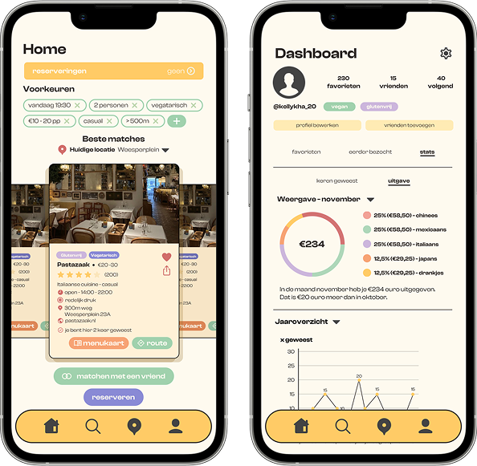
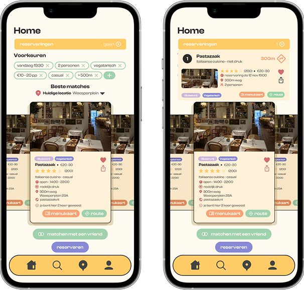
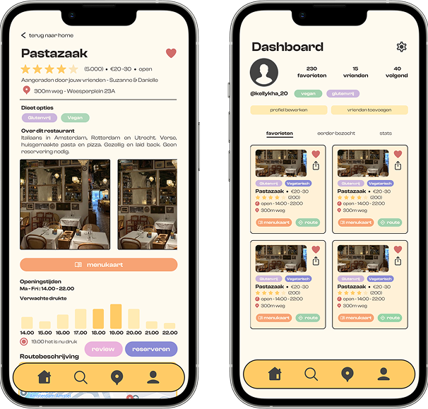
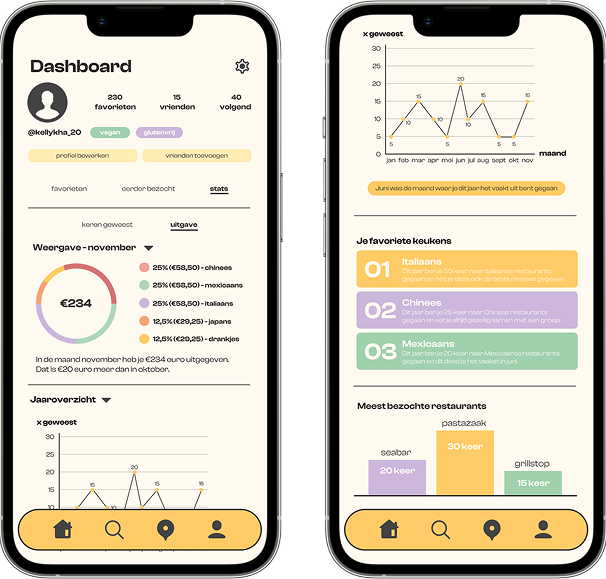
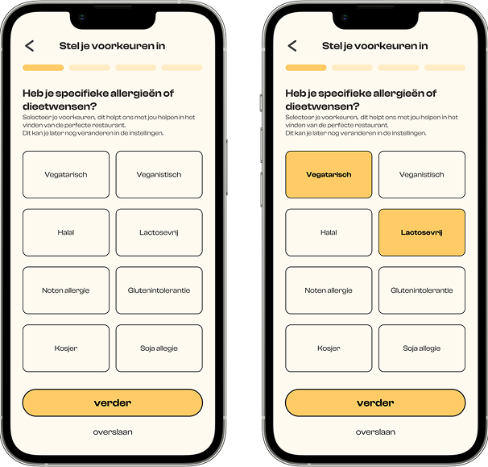

3 weeks
october 2024 - november 2024
UX/UI designer
Figma
For this class i designed an app for restaurant reccomendations while keeping all the data that's being collected in mind. Which information should be displayed for the users and which data should be shown on the dashboard for the owners.
An app that helps users find restaurants that meet their preferences. These preferences include diet, crowds, location, price or previously visited restaurants.This way you can find a restaurant that suits your needs faster and without stress.

The homescreen lets users filter restaurants by preferences like diet, price, and location. Restaurant cards show essential details including cuisine, price range, and distance.
This simple design helps users quickly find places that match their needs without the stress of endless scrolling.

The restaurant detail page provides users with comprehensive information about the restaurant including rating, price and location. The page alsp highlights dietary options, displays photos of the restaurant, and features a crowd prediction graph to help users plan their visit.
The dashboard screen showcases the user's favorite restaurants in an organized grid format, Each restaurant card includes essential details like dietary tags, hours, and distance, with convenient buttons for viewing menus or getting directions.

The dashboard offers users insights into their dining habits with personalized statistics.
The analytics show visits throughout the year, favorite cuisine types ranked by visits, and most frequented restaurants displayed in a bar chart. These visualizations help users better understand their dining patterns and preferences.

The dietary questionnaire screen allows users to specify their food restrictions and preferences. Users can select multiple options (as shown with the highlighted vegetarian and lactose-free selections) to personalize their restaurant recommendations.
This initial setup ensures all future suggestions will accommodate the user's specific dietary needs.
